El Murciélago Blanco Hondureño

Introducción
Tambien conocido como: Murcielago bola de algodon
Nombre cientifico: Ectophylla alba
Dieta: Frugívoro
Estado de conservacion: Casi en peligro
Bioma: Bosque tropical lluvioso
Comportamiento: Tranquilo
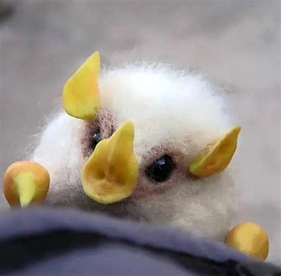
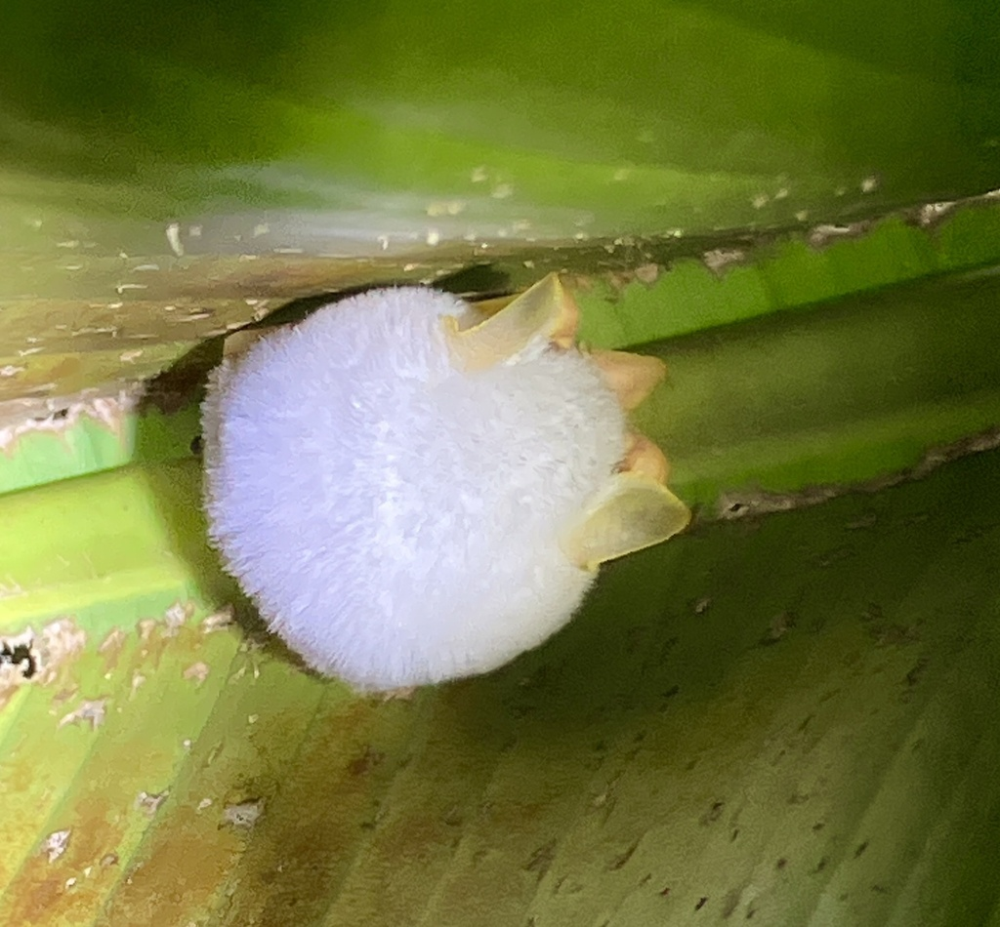
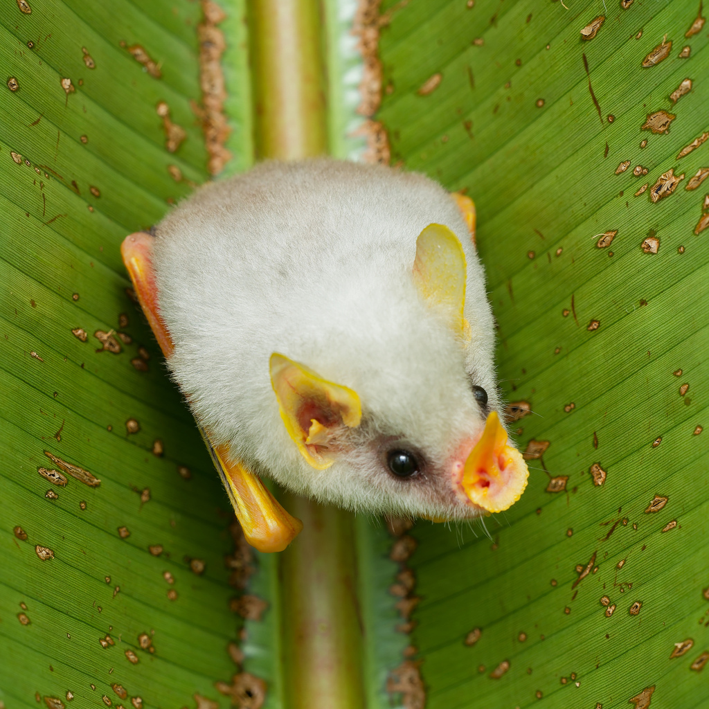
Anatomia y aparencia
Masa de 6 g
Largo 3.7 - 4.5 cm
Ala a ala 10 cm
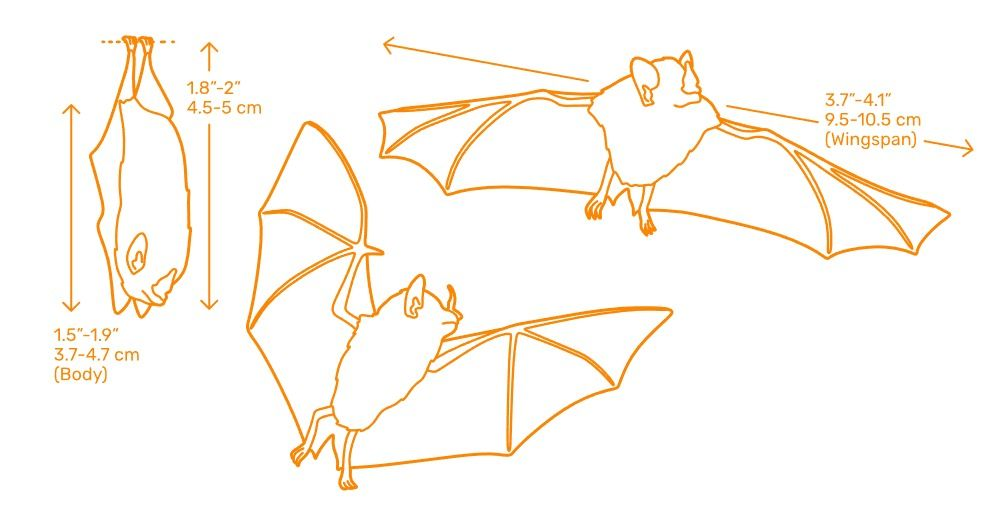
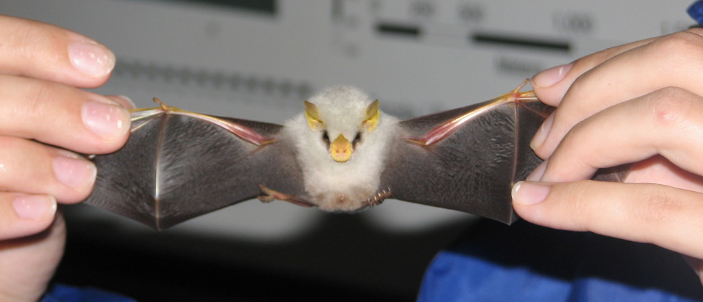
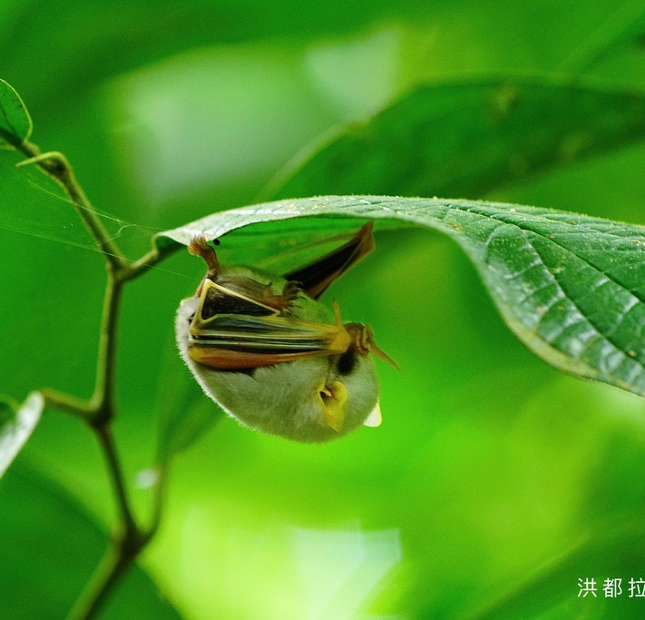
Anatomia y aparencia
Filostómido
Pelaje blanco
Membranas de alas color negro
Pigmentación por carotenoides
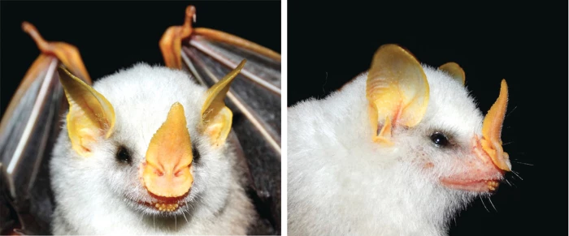
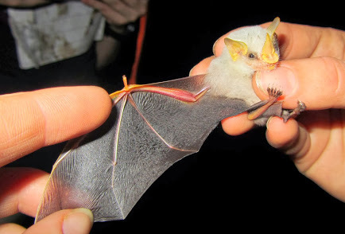
Dieta
Mayormente frugívoros, se especializa en los higos.
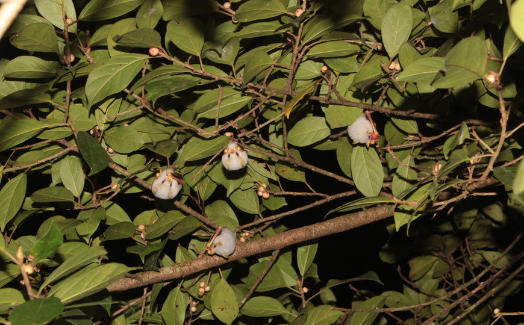
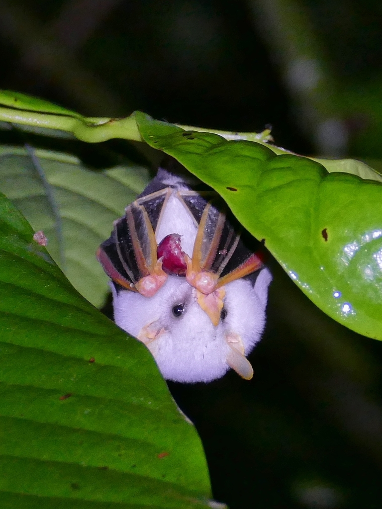
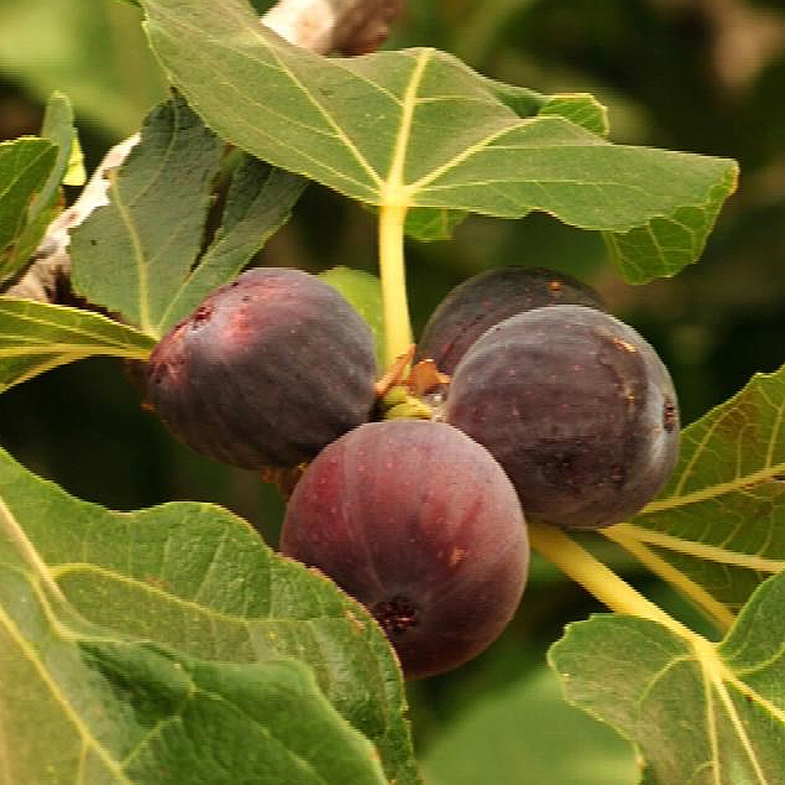
Construcción de carpas
Usan las hojas de las plantas heliconia para hacer sus hogares temporales, eligen hojas que estén a unos 6 pies desde el suelo, duermen por el día.
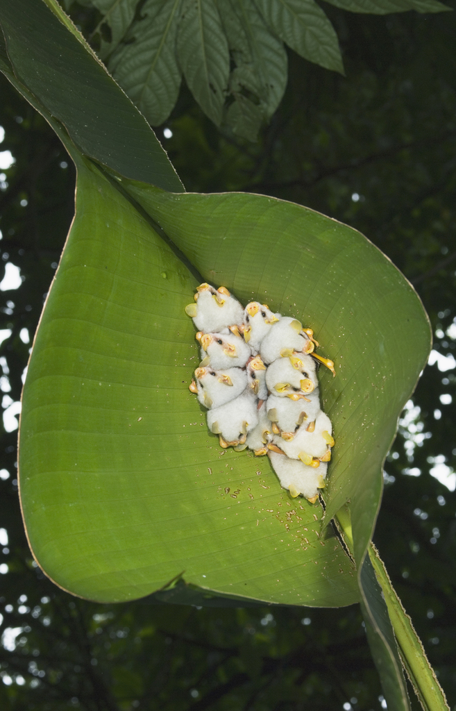
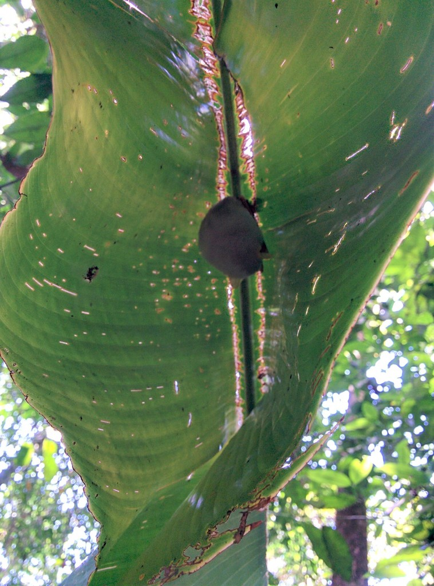
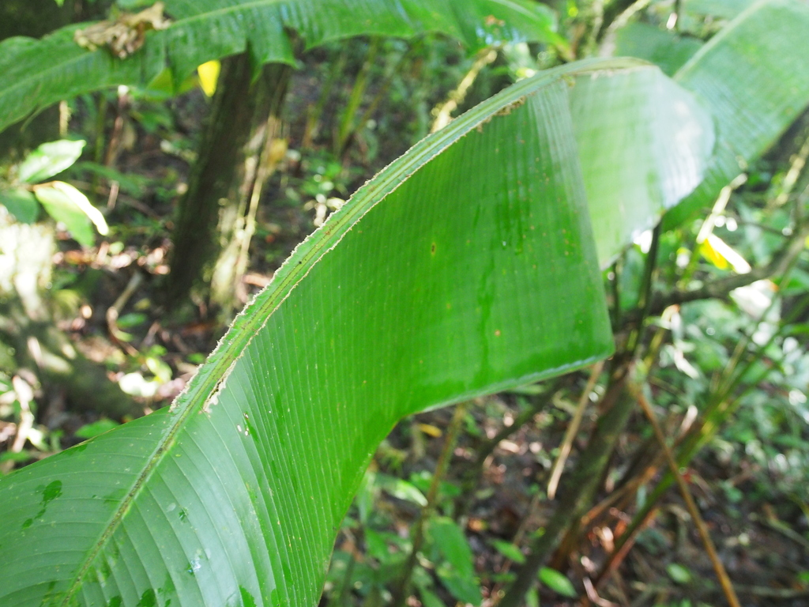
Construcción de carpas
Camuflaje
Se camuflan por el sol.
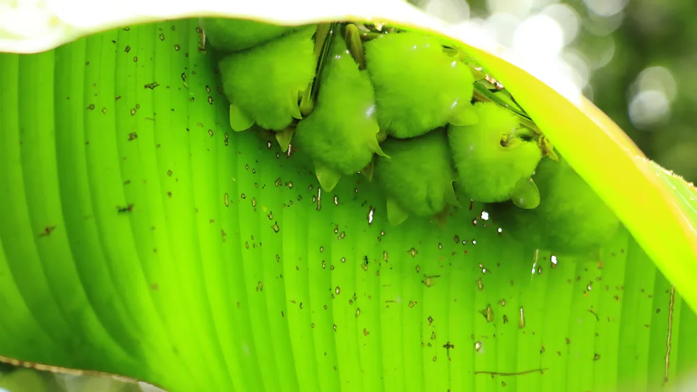
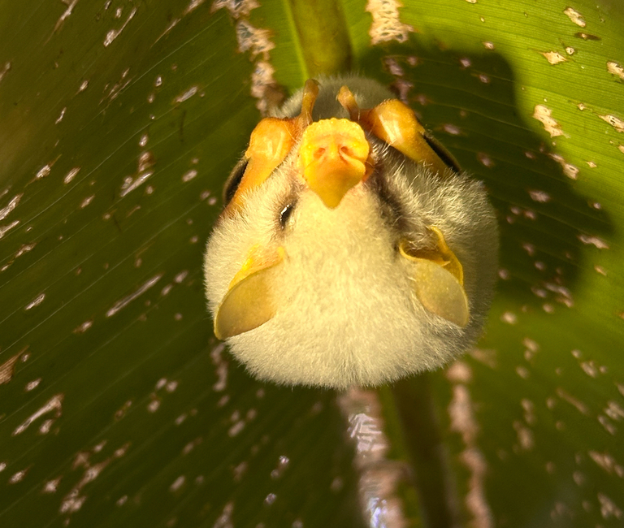
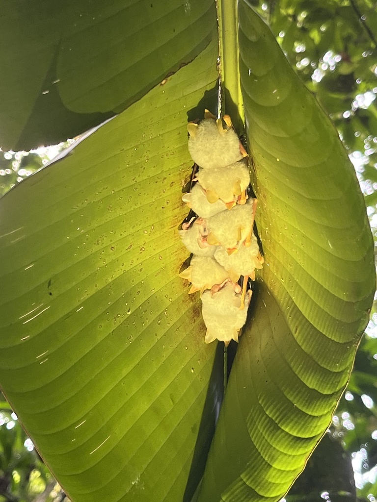
Reflexión
Son esenciales para el funcionamiento
de los ecosistemas tropicales:
- Dispersores de semillas
- Polinización
- Control de insectos
Referencias
Animal Diversity WebWikipedia - Ectophylla alba
iNaturalist - Honduran White Bat
Bat Conservation Internacional